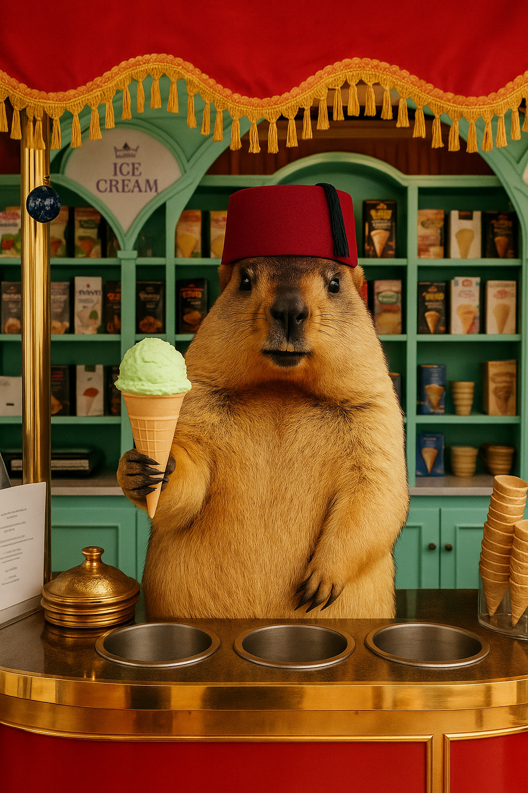

Oferta specjalna
Suśle Lody Rzemieślnicze
Podajemy chłód w najbardziej gorącym wydaniu. Nasze lody powstają w ognistej kuźni, dlatego każda gałka ma w sobie odrobinę płomiennej nuty. Idealne jako deser po koncercie albo rozgrzewce na parkiecie.
- Autorskie smaki z chrupiącymi dodatkami z orzechów susła.
- Pokaz flambowania lodów z użyciem prawdziwych płomieni.
- Personalizacja stołu deserowego pod temat przewodni wydarzenia.
